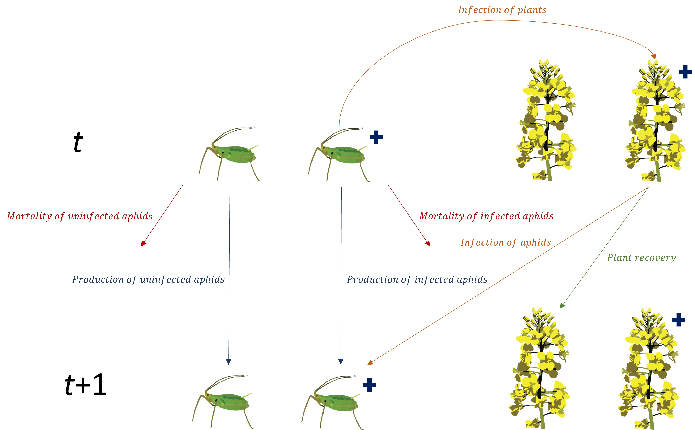
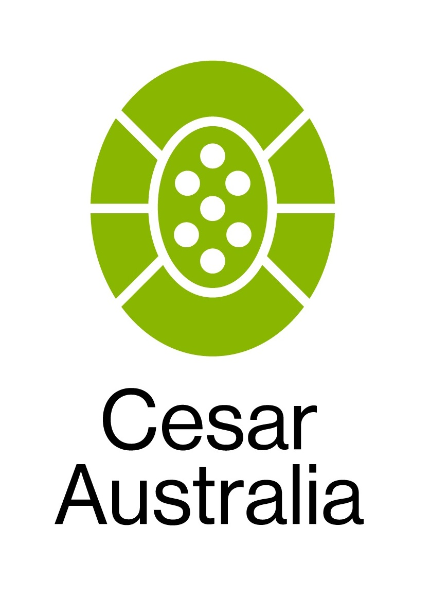
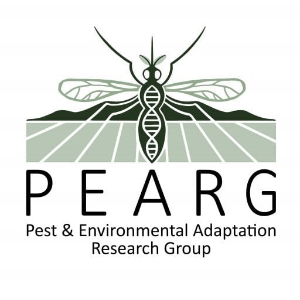
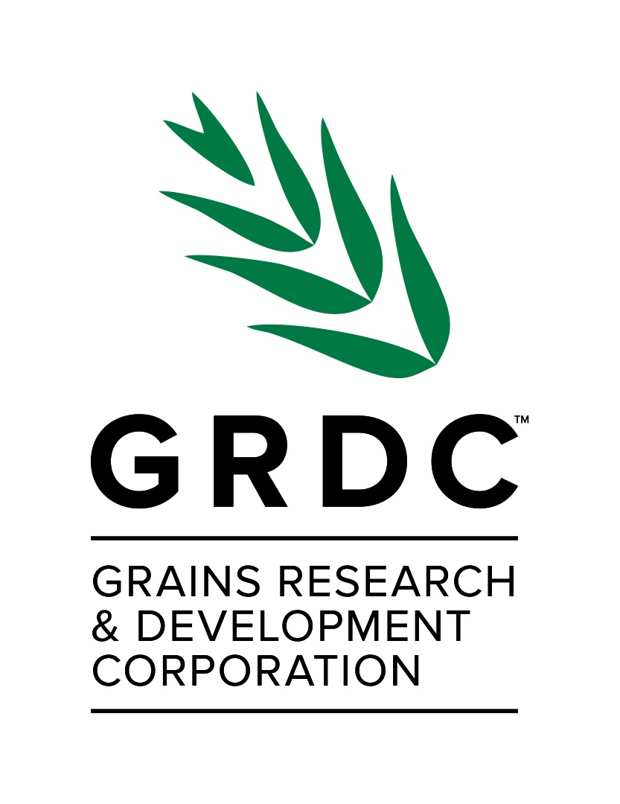

EndoSim is a package designed to parameterise and run simulations using the AGPIP Endosymbiont model developed by Cesar Australia and PEARG.
The EndoSim model
The EndoSim model is a modular discrete-time model to simulate interactions between pests and endosymbionts. The main purpose of the model is to simulate pest dynamics when infected by an endosymbiont with deleterious effects on pest fitness. Currently, the model is designed for aphid pests which reproduce asexually, and for endosymbionts that can be transmitted vertically (via offspring inheriting endosymbionts from their mothers) or horizontally (via feeding on a crop plant). Full details of the model can be found in the accompanying paper (Slavenko et al. in prep).

Usage
A model simulation can be run by using the endosim() function. This function accepts as input six objects of unique classes:
Pest: object of class
pest()– includes all the functions defining the pest’s population dynamics, including development, fecundity, mortality, and immigration and emigration.Endosymbiont: object of class
endosym()– includes the endosymbiont’s fitness cost and functions defining horizontal transmission rates, as well as the date of initial introduction to the population and the number of infected individuals introduced.Crop: object of class
crop()- includes the half-time of endosymbiont plant recovery, sowing, emergence and harvest dates, a function defining how pest carrying capacity changes based on time after crop emergence, and the crop density (in m2).Parasitoid: object of class
parasitoid()– includes all the functions defining the parasitoid’s population dynamics and behaviour, including development, attack rates and handling times, as well as the date of initial introduction to the population and the number of individuals introduced.init: object of class
initial()– defining the numbers of crop plants, and R+ and R- pests at the start of the simulations.conds: object of class
sim_conds()– defining the length of the simulation and environmental conditions (rainfall, min, max and mean temperature) in each daily timestep. Conditions for a given location can be generated with themake_conds()function, which accepts a start and end date for the simulation and GPS coordinates (in decimal degrees) of the location. Environmental data are then downloaded from SILO gridded daily climate surface layers (derived either by splining or kriging observational data from weather stations) and extracted for the required coordinates and dates.
The user can then use logical arguments to switch on or off different modules. Currently available are vertical transmission of the endosymbiont (vert_trans), horizontal transmission of the endosymbiont (hori_trans), immigration (imi), emigration (emi), and parasitoids (para). The function will then generate an object of class endosim_mod() which contains the output of the simulation, including daily summaries of the number of infected and uninfected pests. A simulation output can be plotted using a generic plot() function, which can plot time-series of the total daily number of pests (type = “pop_size”; default), the daily proportion of infected pests in the population (type = “R+”), or the daily proportion of pests in different life-stages (type = “demo”).
The package offers users great flexibility in setting up their simulations, in terms of initial population sizes, crop dynamics, dates of introduction of infected aphids and parasitoids, and propagule pressure of the initial introductions. Additionally, to facilitate exploration of how the different modules can affect pest populations, the counterfact() function can be used. This function accepts the same inputs as endosim(), as well as a list defining the scenarios to be explored. Each module can either be fixed to activated, fixed to deactivated, or set to be either activated or deactivated. The function then runs a set of simulations, with all combinations of modules that are not fixed, and stores them in an object of class endosim_col(). Generic summary() and plot() functions allow comparison of pest dynamics between all scenarios.
Additional information and contact info
This project was funded by the Grains Research and Development Corporation (GRDC) as part of the Australian Grains Pest Innovation Program (AGPIP).
Full details of the model can be found in the following publication:
Slavenko A, Ross PA, Mata L, Hoffmann AA & Umina PA in prep, Modelling the spread of a novel endosymbiont infection in field populations of an aphid pest.
For any questions about the model, suggestions for the package, or requests for information or new functionalities, please contact Alex Slavenko at Cesar Australia.
